Key authentication module¶
The authkey module for GeoServer allows for a very simple authentication protocol designed for
OGC clients that cannot handle any kind of security protocol, not even the HTTP basic authentication.
For these clients the module allows a minimal form of authentication by appending a unique key in the URL that is used as the sole authentication token. Obviously this approach is open to security token sniffing and must always be associated with the use of HTTPS connections.
A sample authenticated request looks like:
http://localhost:8080/geoserver/topp/wms?service=WMS&version=1.3.0&request=GetCapabilities&authkey=ef18d7e7-963b-470f-9230-c7f9de166888
Where authkey=ef18d7e7-963b-470f-9230-c7f9de166888 is associated to a specific user (more on this later).
The capabilities document contains backlinks to the server itself, linking to the URLs that can be used
to perform GetMap, GetFeatureInfo and so on.
When the authkey parameter is provided the backlinks will contain the authentication key as well,
allowing any compliant WMS client to access secured resources.
Limitations¶
The authkey module is meant to be used with OGC services. It won’t work properly against the
administration GUI, nor RESTConfig.
Key providers¶
Key providers are responsible for mapping the authentication keys to a user. The authentication key itself is a UUID (Universal unique Identifier). A key provider needs a user/group service and it is responsible for synchronizing the authentication keys with the users contained in this service.
Key provider using user properties¶
This key provider uses a user property UUID to map the authentication key to the user. User
properties are stored in the user/group service. Synchronizing is simple since the logic has
to search for users not having the property UUID and add it. The property value is a generated
UUID.
UUID=b52d2068-0a9b-45d7-aacc-144d16322018
If the user/group service is read only, the property has to be added from outside, no synchronizing is possible.
Key provider using a property file¶
This key provider uses a property file named authkeys.properties. The default user/group service
is named default. The authkeys.properties for this service would be located at
$GEOSERVER_DATA_DIR/security/usergroup/default/authkeys.propeties
A sample file looks as follows:
# Format is authkey=username
b52d2068-0a9b-45d7-aacc-144d16322018=admin
1825efd3-20e1-4c18-9648-62c97d3ee5cb=sf
ef18d7e7-963b-470f-9230-c7f9de166888=topp
This key provider also works for read only user/group services. Synchronizing adds new users not having an entry in this file and removes entries for users deleted in the user/group service.
Key provider using an external web service¶
This key provider calls an external URL to map the authentication key to the user. This allows GeoServer to integrate into an existing security infrastructure, where a session token is shared among applications and managed through dedicated web services.
The web service URL and some other parameters can be specified to configure the mapper in detail:
Option |
Description |
|
the complete URL of the key mapping webservice, with a special placeholder ({key}) that will be replaced by the current authentication key |
|
a regular expression used to extract the username from the webservice response; the first matched group (the part included in parentheses) in the regular expression will be used as the username; the default (^\s*(.*)\s*$) takes all the response text, trimming spaces at both ends |
|
timeout to connect to the webservice |
|
timeout to read data from the webservice |
The mapper will call the webservice using an HTTP GET request (webservice requiring POST are not supported yet), replacing the {key} placeholder in the configured URL with the actual authentication key.
If a response is received, it is parsed using the configured regular expression to extract the username from it. New lines are automatically stripped from the response. Some examples of regular expression that can be used are:
Regular Expression |
Usage |
|
all text trimming spaces at both ends |
|
json response where the username is contained in a property named user |
|
xml response where the username is contained in a tag named username |
Synchronizing users with the user/group service is not supported by this mapper.
AuthKEY WebService Body Response UserGroup Service¶
When using an external web service to get Auth details, it is possible to define a custom GeoServer UserGroup Service being able to fetch Authorities - aka user’s Roles - from the HTTP Body Response.
The rationale is mostly the same; that kind of GeoServer UserGroup Service will apply a rolesRegex - Roles Regular Expression - to the body response - which can be either XML, JSON or Plain Text/HTML - in order to fetch the list of available Authorities.
In order to do this, it is possible to configure instances of AuthKEY WebService Body Response User Group Service.
First thing to do is to:
Login as an
AdministratorMove to
Security>Users, Groups, Rolesand selectAdd newfromUser Group Services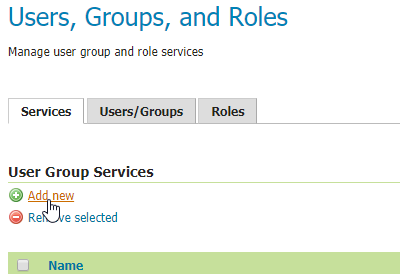Click on
AuthKEY WebService Body Response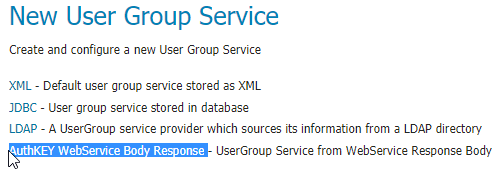Provide a
Nameand select anything you want fromPasswords- those won’t be used by this service, but they are still mandatory for GeoServer -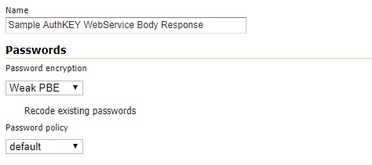Provide a suitable
Roles Regexto apply to your Web Service ResponseNote
This is the only real mandatory value to provide. The others are optional and will allow you to customize the User Group Service behavior (see below)
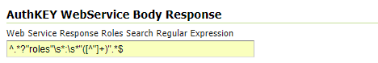
Once the new GeoServer UserGroup Service has been configured, it can be easily linked to the Key Provider Web Service Mapper.
From
Authentication>Authentication Filters, select - or add new -AuthKEYusingWeb Serviceas key mapperSelect the newly defined
UserGroup Serviceand save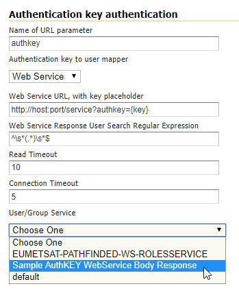
Additional Options
Optional static comma-separated list of available Groups from the Web Service response
It is worth notice that this
UserGroup Servicewill always translate fetched Roles in the formROLE_<ROLENAME>As an instance, if the
Roles Regular Expressionwill match something like:my_user_role1, another_custom_user_role, role_External_Role_X
this will be converted into 3 different
GeoServer User Rolesnamed as:ROLE_MY_USER_ROLE1 ROLE_ANOTHER_CUSTOM_USER_ROLE ROLE_EXTERNAL_ROLE_X
Of course the role names are known only at runtime; nevertheless it is possible to statically specify associated
GeoServer User Groupsto be mapped later to other internalGeoServer User Roles.What does this mean? A
GeoServer User Groupcan be defined on the GeoServer Catalog and can be mapped by the activeRole Servicesto one or more specificGeoServer User Roles.This mainly depends on the
GeoServer Role Serviceyou use. By default, the internalGeoServer Role Servicecan map Roles and Groups through static configuration stored on the GeoServer Data Dir. This is possible by editingGeoServer User Groupdetails from theUsers, Groups, and Rolespanel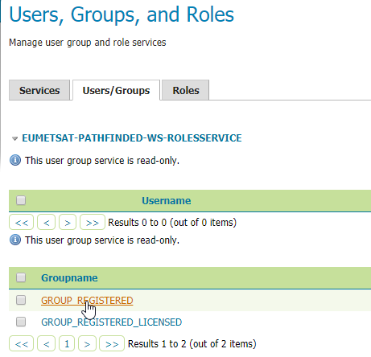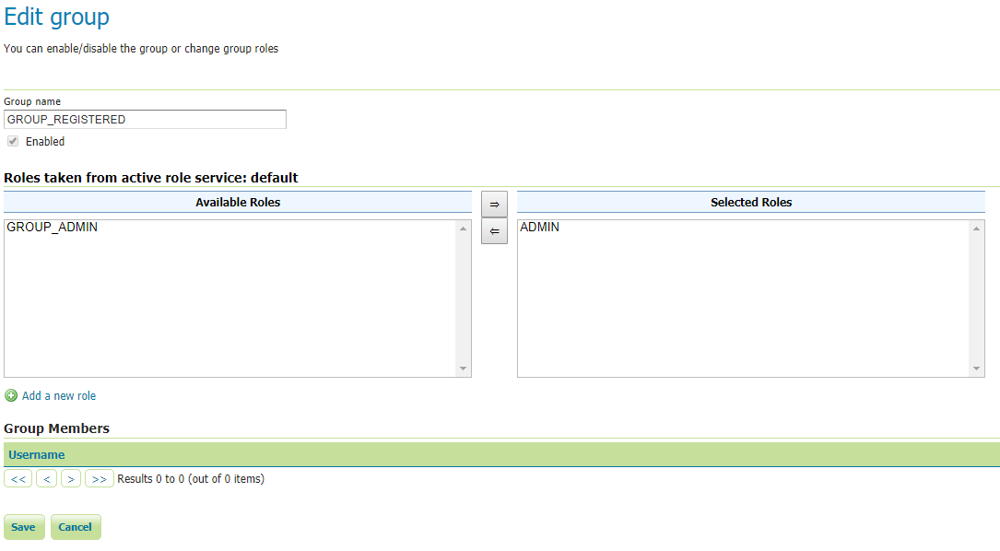Now, this custom
UserGroup Servicemaps dynamicallyGeoServer User RoletoGeoServer User Groupas follows:ROLE_MY_USER_ROLE1 <> GROUP_MY_USER_ROLE1 ROLE_ANOTHER_CUSTOM_USER_ROLE <> GROUP_ANOTHER_CUSTOM_USER_ROLE ROLE_EXTERNAL_ROLE_X <> GROUP_EXTERNAL_ROLE_X
In order to be able to assign any
GeoServer User Groupto other internalGeoServer User Roles, since those are known only at runtime, theUserGroup Serviceallows us to statically specify theGeoServer User Groupsthe Web Service can use; this possible by setting theOptional static comma-separated list of available Groups from the Web Service responseoption: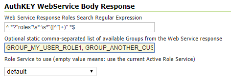Once this is correctly configured, it will be possible to edit and assign
GeoServer User Rolesto the Groups by using the standard way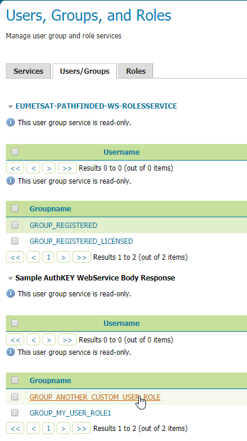Role Service to use
By default, if no
Role Servicespecified, theUserGroup Servicewill use theGeoServer Active Role Serviceto resolveGeoServer User RolesfromGeoServer User Groups- as specified above -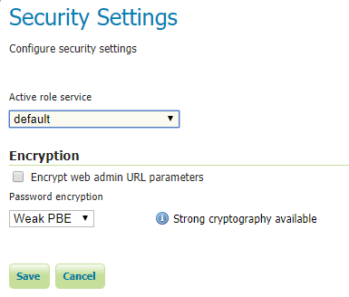It is possible to define a
Custom Role Serviceto use instead, to resoleGeoServer User Roles; this is possible simply by selecting theRole Serviceto use from theRole Service to useoption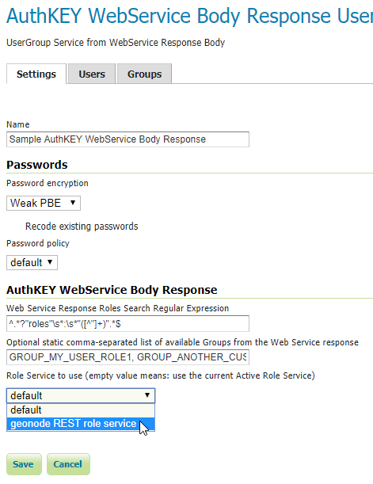
Configuration¶
Configuration can be done using the administrator GUI. There is a new type of authentication filter named authkey offering the following options.
URL parameter name. This the name of URL parameter used in client HTTP requests. Default is
authkey.Key Provider. GeoServer offers the providers described above.
User/group service to be used.
Some of the key providers can require additional configuration parameter. These will appear under the Key Provider combobox when one of those is selected.
After configuring the filter it is necessary to put this filter on the authentication filter chain(s).
Note
The administrator GUI for this filter has button Synchronize. Clicking on this button saves the current configuration and triggers a synchronize. If users are added/removed from the backing user/group service, the synchronize logic should be triggered.
Provider pluggability¶
With some Java programming it is possible to programmatically create and register a new key to user name mapper that works under a different logic. For example, you could have daily tokens, token generators and the like.
In order to provide your custom mapper you have to implement the org.geoserver.security.AuthenticationKeyMapper
interface and then register said bean in the Spring application context. Alternatively it is possible
to subclass from org.geoserver.security.AbstractAuthenticationKeyMapper. A mapper (key provider) has
to implement
/**
*
* Maps a unique authentication key to a username. Since usernames are
* unique within a {@link GeoServerUserGroupService} an individual mapper
* is needed for each service offering this feature.
*
* @author Andrea Aime - GeoSolution
*/
public interface AuthenticationKeyMapper extends BeanNameAware {
/**
* Maps the key provided in the request to the {@link GeoServerUser} object
* of the corresponding user, or returns null
* if no corresponding user is found
*
* Returns <code>null</code> if the user is disabled
*
* @param key
* @return
*/
GeoServerUser getUser(String key) throws IOException;
/**
* Assures that each user in the corresponding {@link GeoServerUserGroupService} has
* an authentication key.
*
* returns the number of added authentication keys
*
* @throws IOException
*/
int synchronize() throws IOException;
/**
* Returns <code>true</code> it the mapper can deal with read only u
* user/group services
*
* @return
*/
boolean supportsReadOnlyUserGroupService();
String getBeanName();
void setUserGroupServiceName(String serviceName);
String getUserGroupServiceName();
public GeoServerSecurityManager getSecurityManager();
public void setSecurityManager(GeoServerSecurityManager securityManager);
}
The mapper would have to be registered in the Spring application context in a applicationContext.xml
file in the root of your jar. Example for an implementation named com.mycompany.security.SuperpowersMapper:
<?xml version="1.0" encoding="UTF-8"?>
<!DOCTYPE beans PUBLIC "-//SPRING//DTD BEAN//EN" "http://www.springframework.org/dtd/spring-beans.dtd">
<beans>
<bean id="superpowersMapper" class="com.mycompany.security.SuperpowersMapper"/>
</beans>
At this point you can drop the authkey jar along with your custom mapper jar and use it in the
administrator GUI of the authentication key filter.